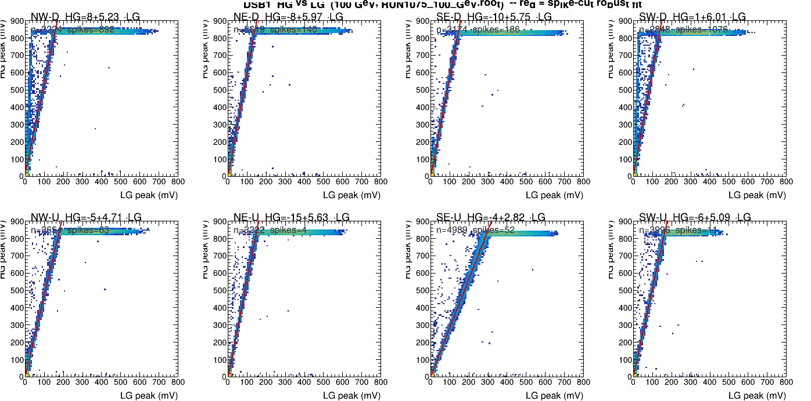
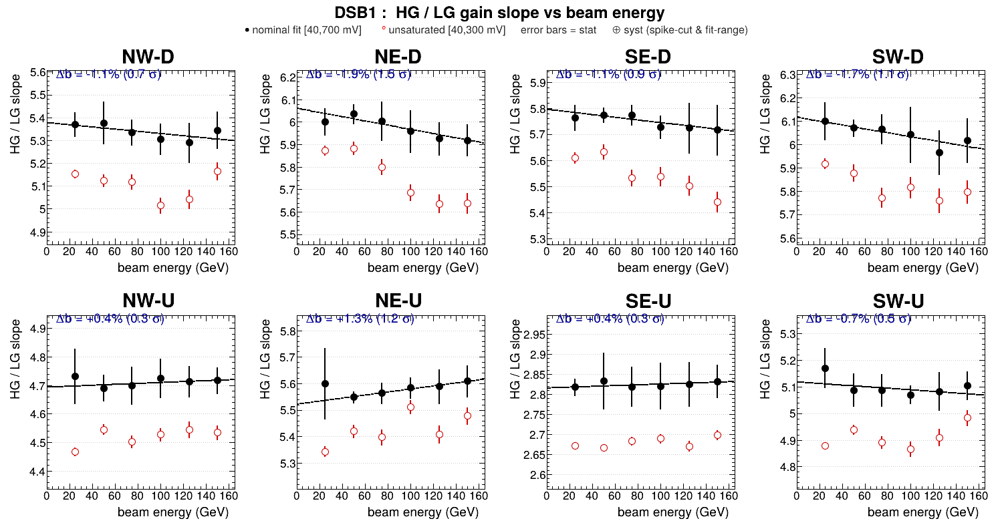
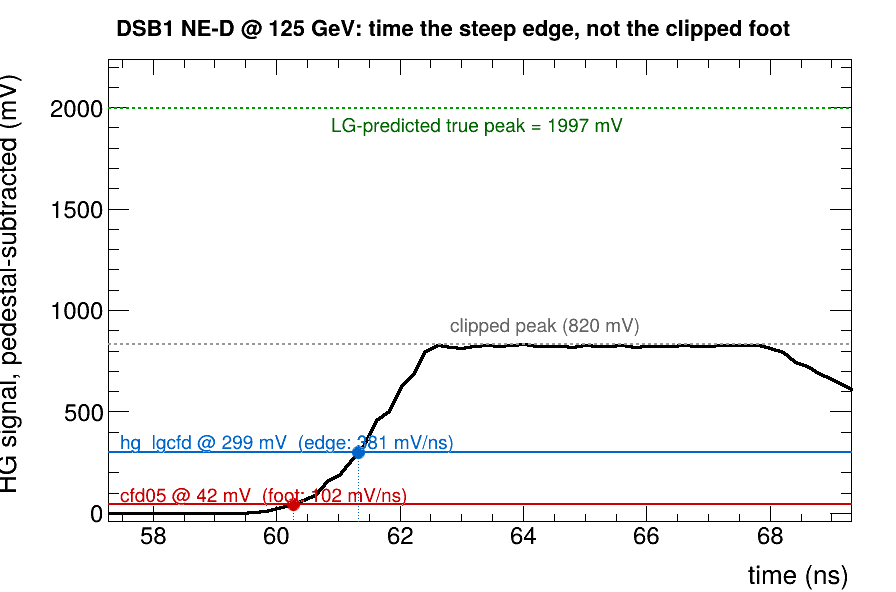
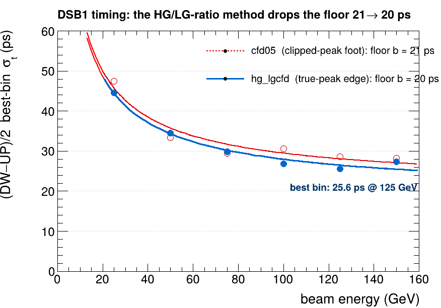

A calorimeter that also tells time
RADiCAL is a compact tungsten / LYSO:Ce shashlik electromagnetic calorimeter — 25 radiation lengths in ~135 mm. An electron shower deposits its energy as scintillation light, collected by four wavelength-shifting capillaries read out at both ends (Down and Up) — eight SiPM channels in all.
Every channel is recorded twice, at two gains. The high-gain (HG) copy is the fast timing channel; the low-gain (LG) copy measures energy and stays linear all the way to 150 GeV. Two CAEN DT5742 digitizers sample every waveform at 5 GS/s (1024 cells), with a micro-channel-plate PMT providing a common start t₀ and wire chambers tracking where each electron entered.
The timing observable is the depth half-difference (DW−UP)/2 — half the difference between the down-end and up-end shower times. The common start cancels, leaving a clean, self-referencing measure of how deep in the crystal the shower developed. Target resolution: 20–30 ps. The rest of this page is the story of getting there.
The timing channel saturates
The HG channel is digitized in a DC-offset window built to also catch the pulse's negative afterswing. The price: a hard ceiling. Every HG pulse clips flat at ~820 mV. At 25 GeV only a few percent of pulses reach it; by 75 GeV and above, 90–94% are clipped — the true peak is simply gone.

Constant-fraction discrimination (CFD) times a pulse at a fixed fraction of its peak. But if the peak you measure is the clip, the fraction is wrong — the crossing slides down to the low-slope foot of the pulse, exactly where timing is most fragile. The tell is unmistakable:
The low-gain copy never clips
The same shower that saturates the HG channel lands, attenuated, in the LG channel — where it stays comfortably on-scale and linear to 150 GeV. HG and LG are one pulse seen at two gains, so they are tied by a single constant: HG_peak = a + b·LG_peak. Crucially, that gain ratio is a property of the electronics, not the shower — it must not depend on beam energy.


hg_lgcfd: put the threshold on the edge
The fix follows directly. For each event, predict the true (unclipped) HG peak from the low-gain copy, HG_true = a + b·LG_peak, and place the CFD threshold at 15% of that true peak. Because the true peak towers over the clip, 15% of it lands high on the steep rising edge — not down on the foot. We call this hg_lgcfd.

Why 15%? Push the fraction to 30% and, for the brightest showers, the threshold rides into the clip itself and the timing blows up. 15% is the steep-but-safe sweet spot — ~98.5% of pulses yield a valid crossing. The recipe is calibrated once from clean, unclipped low-energy data (calibHGLG) and applied at every energy.
Better where it's clipped — and the honest ledger
Run the identical best-bin (DW−UP)/2 pipeline for both methods across all six energies. hg_lgcfd wins exactly where the HG is clipped — 100–150 GeV — reaching a best single bin of 25.6 ps at 125 GeV:
| E (GeV) | 25 | 50 | 75 | 100 | 125 | 150 | floor b |
|---|---|---|---|---|---|---|---|
| cfd05 | 47.4 | 33.3 | 29.5 | 30.6 | 28.6 | 28.2 | 21.4 |
| hg_lgcfd | 44.6 | 34.6 | 29.9 | 26.9 | 25.6 | 27.3 | 19.6 |

The floor is the shower, not the instrument
Why doesn't a 3.7× steeper edge give a 3.7× better resolution? Because by the time we average seven timing channels, the per-pulse slew term is already small — a few picoseconds. What dominates (DW−UP)/2 is something the electronics can't touch: the longitudinal depth of the shower fluctuates event to event, by about one radiation length of LYSO, and that half-difference is the measurement. The ~20 ps floor is shower-development physics.
So the HG/LG-ratio method does precisely the right thing — it recovers the true rising edge that saturation hid — and the experiment then tells us, cleanly, where the remaining limit lives. We push the instrument until the detector itself is the thing we're measuring. That is the headline: not a single number, but a method that takes the clipped foot off the table and leaves us face to face with the shower.